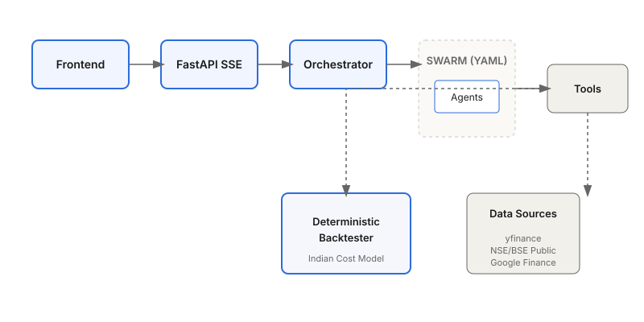

The open-source AI research analyst for Indian markets.
Free data. Transparent reasoning. Swarm-orchestrated. Built on the OpenAI Agents SDK and OpenRouter.

Engineered for depth.
Swarm Orchestration
Teams as YAML; add a team without touching Python. Orchestrate complex research flows across multiple specialized agents.
Free Data Sources
Leverages yfinance, NSE/BSE public endpoints, and Google Finance scraping to ensure high-quality research without expensive API subscriptions.
Deterministic Backtester
Built with pandas and numpy, incorporating the Indian cost model including STT, stamp duty, brokerage, GST, and SEBI fees.
Tool-First Design
A reflection-based registry allows you to drop a Python module into the tools directory and have it instantly wired for agent use.
Transparent Reasoning
Every tool call is logged with its arguments, results, and execution duration in a collapsible drawer for full auditability.
Multi-Model
Powered by OpenRouter. Swap any agent's model role by simply editing a configuration file in config/models.yaml.
Extensible Skills
Define ephemeral prompt fragments with their own tool allowlists to give agents specialized context and capabilities.
SQLite Memory
Persists sessions, messages, and runs in a local SQLite database, powering a fully searchable chat history sidebar.
Quickstart
1. Clone and install
git clone https://github.com/Dharuna457/indie-market-analyst.git
cd indie-market-analyst
uv sync
cp .env.example .env # add OPENROUTER_API_KEY2. Run the backend
uv run uvicorn indie_market_analyst.api_server:app --reload3. Run the frontend
cd frontend && npm install && npm run devArchitecture
indie-market-analyst operates on two distinct planes: a cognitive engine managing agents, tools, and skills, and a deterministic engine providing precise backtesting and data processing.
